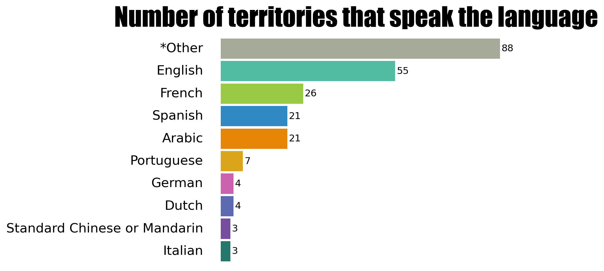

For this Plotnine Contest I wanted to explore the features of plotnine for geospatial data visualization. I also wanted to prove if I can replicate my usual ggplot2 workflow and if my common used features are available in plotnine.
So I have a checklist:
Plot geospatial vector data
Change color palette
Use map projections
Theme
Combine plots
Load data
The example data is about world languages and was obtained here
To load geoespatial data you can use the {geopandas} library:
With read_file() you can load the shapefile format.
Here I convert the data to a cartesian projection because plotnine doesn’t support map projections yet.
I also compute the first 10 most used languages based in the number of features with the language as First Official Languaje. It’s not too exhaustive, a better approach would be based on population, but here I decided to keep it simple.
Code
import geopandas as gpdimport numpy as npdata = gpd.read_file("data/soc_071_world_languages/World_Languages.shp")data = data.to_crs(3857)top10 = data.groupby(['FIRST_OFFI'])['FIRST_OFFI'].count().nlargest(10)data["top"] = np.where(data['FIRST_OFFI'].isin(top10.index), data['FIRST_OFFI'], "*Other")
Visualization
Map
My first aim was to obtain a map colored by language. This can be made easily with geom_map() and it looks pretty similar to ggplot in R!
Code
from plotnine import*(ggplot() + geom_map(data, aes(fill="top"))).draw();
Now I changed the color palette and added some styling. The syntax is almost the same than in R, I noticed two small differences:
transparent color: in R you can use “transparent” to not show the polygons borders, in Python you have to use the HEX code with 100% transparency.
dots are underscores: the arguments that in R have a dot, in Python are replaced with an underscore.
I added a column plot to the analysis to include the number of territories that speak each language.
Code
top10n = data.groupby(["top"])["top"].count().nlargest(10).reset_index(name="count")p2 = ( ggplot(top10n, aes(x="reorder(top, count)", y="count", fill="top"))+ geom_col(show_legend=False)+ geom_text(aes(label="count"), ha="left", nudge_y=0.5)+ scale_fill_manual(values=colors)+ coord_flip()+ theme_void()+ labs(title="Number of territories that speak the language")+ theme( axis_text_y=element_text(size=15, ha="right"), plot_title=element_text(size=30, family ="fantasy"), plot_background = element_rect(fill ="white") ))p2.draw();ggsave(p2, "plots/column.png")

Combine plots
Combine plots is very useful because you can show quantities that are not easily shown by a map. So I wanted to arrange the two plots in the same figure as you can make it with the {patchwork} package in R.
I use patchworklib to combine the two plots in a simple layout. I read that patchworklib doesn’t have support for plotnine anymore, so you can obtain some unexpected results.
Easy, the same logic than ggplot. A difference is that in R, I use color = "transparent"to not show the polygons borders, but in Python you have to use the HTML code “#FF000000” for fully transparent border.
Use map projections
It seems like a feature that has to be developed by the cartopy team. Now the maps with geographic coordinates can be distorted, so it is more secure to work with projected coordinates that fits better with cartesian coordinates.